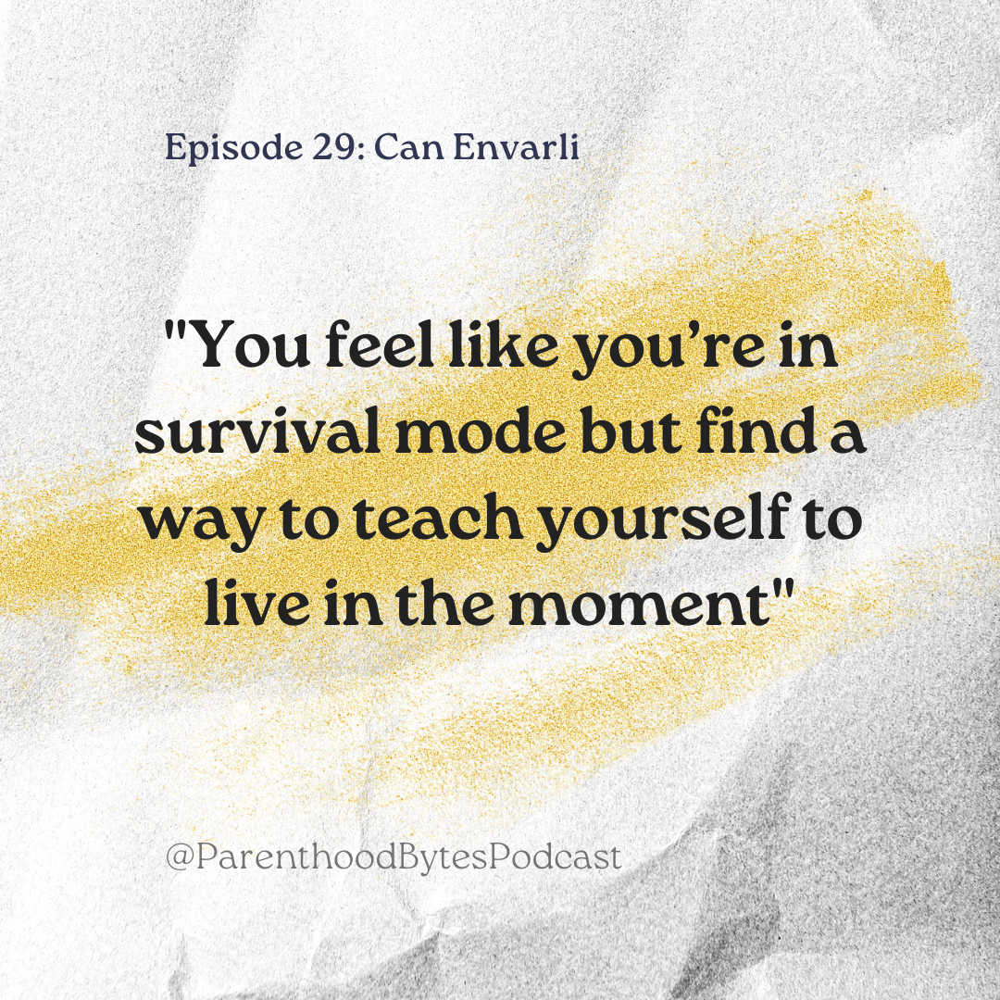

Episode 29: Can Envarli

Episode Notes
In this episode, we sit down with Can Envarli, who lives in Washington and is the VP of Engineering at Liquidity Book. Can shares insights from his life as a working parent, where he balances a demanding career with raising 10-and-a-half-year-old twins. He delves into the topic of work/life balance, emphasizing the fleeting nature of childhood and the importance of cherishing every moment with your kids. Can reflects on the rapid growth of children and the significance of being fully present in their lives, highlighting the irreplaceable nature of each developmental stage. He offers practical tips on keeping kids engaged during family dinners and acknowledges the inevitable frustrations that come with parenting. Can encourages listeners to give themselves grace when facing challenges, including moments of anger or frustration with their children.